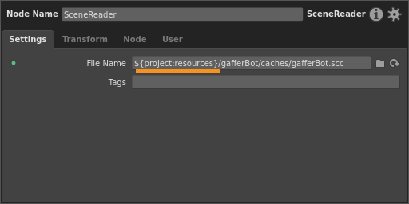
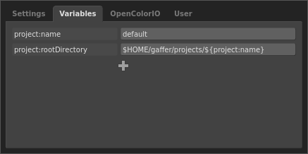
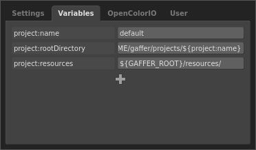
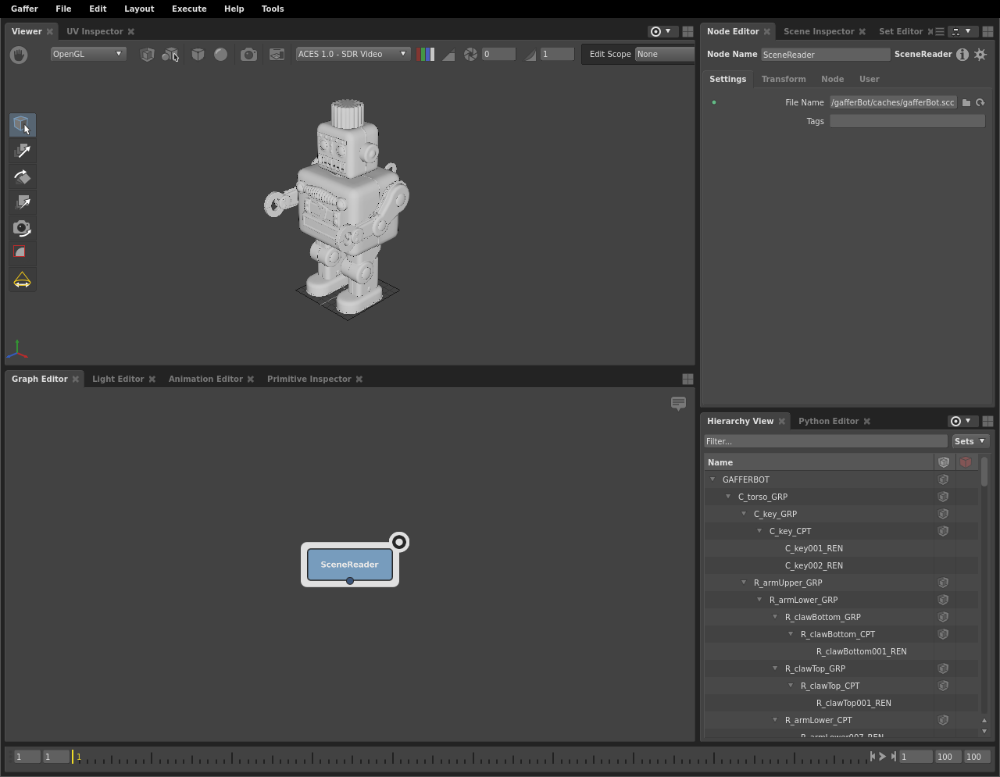

Tutorial: Startup Config 1; Custom Global Context Variables
Gaffer actually consists of multiple applications split between its major functions, such as GUI (the main application interface), Dispatch, Execute, and Stats. These applications are easy to extend and customize. On startup, each can load any number of arbitrary Python scripts, called startup configs, from one or more paths. Each startup config can call API hooks for extending or adding functionality to its parent app.
In this three-part tutorial, we will walk through the following example startup configs that extend the GUI app:
customVariables.py: Adds a custom global Context Variable to node graphs.
customBookmarks.py: Adds file path bookmarks to the various file browsers in Gaffer’s interface.
customNodes.py: Adds a custom entry to the node menu.
In this first config, we will add a global Context Variable) called ${project:resources} that points to the /resources directory in the Gaffer installation directory. This Context Variable will make it slightly easier to reach the directory from any string plug that load files. Since we’ll add the Context Variable using a startup config, it will be automatically added to every node graph Gaffer opens or creates.

Global Context Variables
Before we begin, a quick aside. A global Context Variables is a Context Variable that exists at the node graph’s root, and which is available to every node and plug at every point in the graph. You can view all of a graph’s global Context Variable in the Variables tab of the the settings menu (File > Settings).

All startup configs can modify not only their app, but graphs as well. For instance, all graphs automatically receive the above project:name and project:rootDirectory Context Variables from the GUI app’s default startup config. These global Context Variables help determine where to save the graph, and where to export renders and caches. Thus, in their standard construction, Gaffer graphs already depend on file path substitutions.
In your studio pipeline, you could adopt this approach, and assign additional global Context Variables to path components inside your file system. These path components could then be concatenated into full paths to your geometry, textures, rigs, cameras, reference scripts, etc., thus incorporating your pipeline’s file structure into Gaffer. For example, consider this path built out of global Context Variables:
"/${showPath}/${sequencePath}/${shotPath}/${assetPath}"
If each global Context Variable were assigned to a path component, during a render, the evaluation engine could interpret it to something like:
"/SHOW_001/SEQ_001/SHOT_001/gafferBot"
Of course, this is merely an example. The exact structure and naming convention of the path components would depend on your file system.
One advantage of employing global Context Variables is that they are portable between Gaffer deployments. When you save a graph, all of its plugs are included in the script file. Since a global Context Variable is just a plug, it will be saved, and another user (or system) can read and execute the script, even if they don’t have the same Gaffer configuration as you.
With all that out of the way, onto the first startup config.
customVariables.py
Copy this code to a new a customVariables.py file in ~/gaffer/startup/gui:
1import IECore
2import Gaffer
3
4def __scriptAdded( container, script ) :
5
6 variables = script["variables"]
7
8 if "projectResources" not in variables :
9 projectResources = variables.addMember(
10 "project:resources",
11 IECore.StringData( "${GAFFER_ROOT}/resources/" ),
12 "projectResources"
13 )
14
15 Gaffer.MetadataAlgo.setReadOnly( variables["projectResources"]["name"], True )
16
17application.root()["scripts"].childAddedSignal().connect( __scriptAdded, scoped = False )
Let’s break down what’s going on here.
After importing the necessary modules, we declare a function that we will use to modify the current graph:
4def __scriptAdded( container, script ) :
Both the keyword arguments we pass are implicit, and particular to the signal that will call this function; we leave them as-is.
Inside the function, we grab the variables plug, which contains all of the graph’s global Context Variables. Then, we add a new Context Variable using the addMember() method.
6 variables = script["variables"]
7
8 if "projectResources" not in variables :
9 projectResources = variables.addMember(
10 "project:resources",
11 IECore.StringData( "${GAFFER_ROOT}/resources/" ),
12 "projectResources"
13 )
The addMember() method takes three arguments:
Name: The Context Variable name as it is accessed within the graph, in variable substitutions and Python/OSL expressions. The colon in
project:resourceshas no significance to the interpreter; colons are used merely by convention and for readability.Value: The Context Variable’s default value. You can use any standard plug types, such as floats, integers,
V3f,V2i, etc. If the type comes from a module (such asIECoreorimath), make sure toimportit first.Plug name: The plug name for the Context Variable, accessible from the Python Editor and the API.
Tip
To retrieve the value of a global Context Variable in the Python Editor_], you must point to its value key in the plug dictionary:
root["variables"]["plugName"]["value"].getValue()
Notice that in the value we provided, we used the ${GAFFER_ROOT} substitution as a path component, since it already points to the installation directory. String Context Variables can be made of compound and nested variables, just like environment variables in a terminal.
We then finish the function by setting the variable’s name to read-only, to protect it from accidentally being renamed by the user:
15 Gaffer.MetadataAlgo.setReadOnly( variables["projectResources"]["name"], True )
We wrap up the config by adding our function to an event signal that fires when node graphs are opened and created in the main application:
17application.root()["scripts"].childAddedSignal().connect( __scriptAdded, scoped = False )
Notice the use of the application variable. This is a special variable that refers to the startup config’s parent application.
Testing the global Context Variable
Now we can test the startup config in a live graph. If you haven’t already, save customVariables.py, then launch a new instance of Gaffer. In the empty graph, take a look at the global Context Variables found in the Variables tab of the graph’s settings (File > Settings). You should see the new project:resources variable pointing to the correct path.

Success! Now every node graph you open or create will have the project:resources global Context Variable added to it. Try using the variable to load Gaffy’s scene cache:
Create a SceneReader node.
In the Node Editor, set the File Name plug to
${project:resources}/gafferBot/caches/gafferBot.scc.
If all went well, Gaffy’s geometry cache should have loaded in the graph.

As mentioned earlier, if we wanted to, we could make the path more granular, perhaps by assigning a global Context Variable to each its child directories.
Environment variables and Context Variables
Before concluding the first startup config of this tutorial, we should clarify one point about variable substitutions and path components.
In string plugs, both environment variables and Context Variables use the same variable substitution syntax: ${variable}. It bears reminding you that they are not, however, the same. Context Variables can be modified during the node graph’s execution, while control over environment variables is outside Gaffer’s scope.
In the application, you can test whether a string will substitute for an environment variable in the Python Editor, like so:
import os
"GAFFER_ROOT" in os.environ # True
"projectResources" in os.environ # False
Notice how this is standard Python, and the lack of ${} characters.
If your studio uses environments variables to define file system directories or path components, it might be a better choice to use them, rather than global Context Variables, in your file paths inside graphs.
Quick recap
Adding custom global Context Variables to your node graphs is a fairly simple affair. With them, you can add any typed value, such as strings, and introduce modularity to your graphs’ default values.
In the next part of this tutorial, we will demonstrate some actual GUI modification, with a startup config that adds bookmarks to Gaffer’s file browsers.